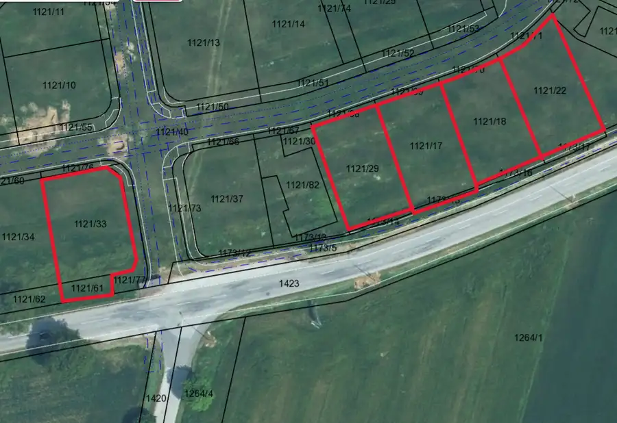
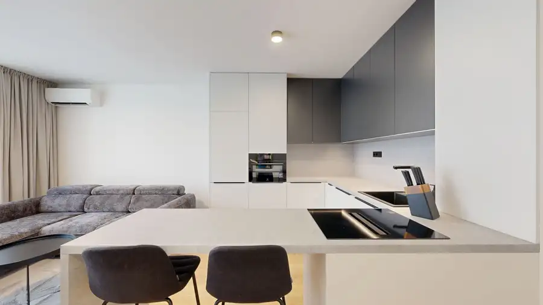
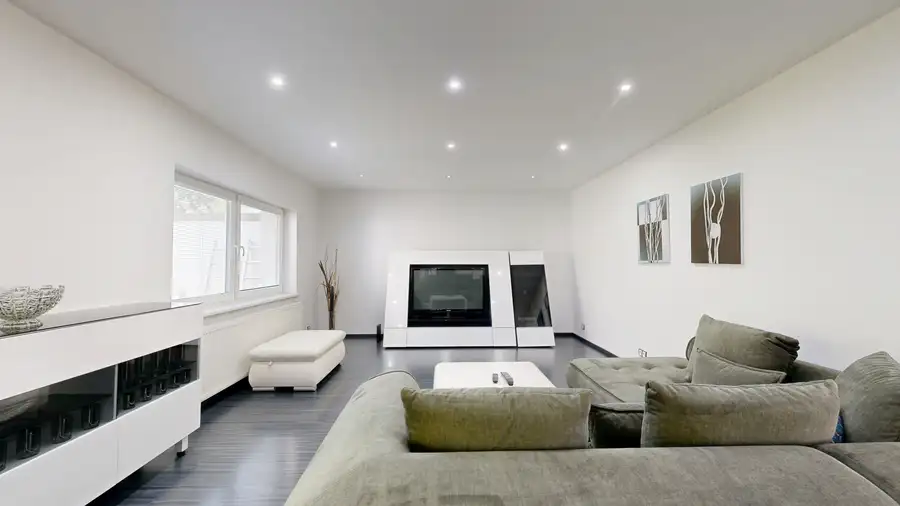

PREDAJ obchodné priestory v centre Trnavy na ul. Halenárska
Trnava
- Plocha205 m²
- StavKompletná rekonštrukcia
- VlastníctvoOsobné
O nehnuteľnosti
Ponúkame na predaj obchodné priestory v atraktívnej lokalite historického centra Trnavy, na Halenárskej ulici. Nehnuteľnosť pozostáva z dvoch priestorov umiestnených na dvoch podlažiach, ktoré sa predávajú spolu ako jeden celok. Celková výmera predstavuje 205 m², pričom priestory ponúkajú široké možnosti využitia – od klasickej obchodnej prevádzky, služieb či showroomu až po kancelárske alebo iné komerčné využitie podľa potrieb nového majiteľa.Na 1. nadzemnom podlaží sa nachádza obchodný priestor s výmerou 82 m², do ktorého je zabezpečený priamy vstup z Halenárskej ulice. Vďaka umiestneniu na úrovni ulice je priestor dobre dostupný pre klientov a vhodný najmä na podnikanie, pri ktorom je dôležitá viditeľnosť a jednoduchý prístup. Súčasťou priestoru je zároveň prístup do historickej pivnice, ktorá sa nachádza pod objektom.Historická pivnica s výmerou 123 m² predstavuje druhú časť ponúkanej nehnuteľnosti. Zachováva si charakteristickú atmosféru historických priestorov a zároveň ponúka zaujímavý potenciál na ďalšie komerčné využitie. Veľkou výhodou je samostatný vstup, vďaka ktorému je možné pivnicu prevádzkovo oddeliť od priestoru na 1. NP. Kupujúci tak môže priestory využívať ako jeden funkčný celok s celkovou výmerou 205 m², alebo využívať ako dve samostatné prevádzky s vlastnými vstupmi.ATRAKTÍVNA POLOHA V CENTRE TRNAVYHalenárska ulica patrí medzi ulice v historickom centre Trnavy, ktoré je vyhľadávané nielen obyvateľmi mesta, ale aj návštevníkmi a turistami. Poloha v centre ponúka výhodu dobrej dostupnosti občianskej vybavenosti, obchodov, služieb, reštaurácií a ďalších prevádzok. Nehnuteľnosť tak môže byť zaujímavou voľbou nielen pre vlastné podnikanie, ale aj ako investičná nehnuteľnosť s možnosťou rozdelenia na dve samostatné komerčné prevádzky.Cena nehnuteľnosti: 320 000 €Ak hľadáte komerčný priestor priamo v centre Trnavy, ktorý ponúka kombináciu výbornej polohy, veľkorysej výmery a flexibility využitia, táto nehnuteľnosť môže byť zaujímavou príležitosťou pre vaše podnikanie alebo investíciu.Pre viac info a obhliadky ma neváhajte kontaktovať na tel. čísle 0915 133 555 alebo gasparova@casmar.sk
Parametre
| Druh | Obchodné priestory |
|---|---|
| Dátum zverejnenia | 7. 10. 2026 |
| Stav nehnuteľnosti | Kompletná rekonštrukcia |
| Typ | Predaj |
| Vlastníctvo | Osobné |
| Úžitková plocha | 205 m² |
Kde to je


Mohlo by Vás zaujímať

PozemokNové6 79 900 €Predaj - stavebné pozemky v obci Dlhá Dlhá 459 m² Ponúkame na predaj stavebné pozemky v obci Dlhá, okres Trnava, vhodné na výstavbu rodinných domov. Na výber sú pozemky s výmerou od 459 m² do 596 m²,…
BytNové10 215 000 €Nový 2-izbový byt s kompletným zariadením – Prúdy, Včelárska ulica, Trnava Trnava 2-izbový51.21 m² Ponúkame na predaj úplne nový, doposiaľ neobývaný 2-izbový byt v modernom rezidenčnom projekte Prúdy na Včelárskej ulici v Trnave.Dispozícia:Byt…
DomNové10 395 000 €2-izbový rodinný dom po rekonštrukcii s krásnou záhradou a altánkom v Trnave – kopánka Trnava 1 m² 2-IZBOVÝ RODINNÝ DOM PO REKONŠTRUKCII S KRÁSNOU ZÁHRADOU A ALTÁNKOM V TRNAVE – KOPÁNKACena: 395 000 €Ponúkame na predaj útulný 2-izbový rodinný dom…